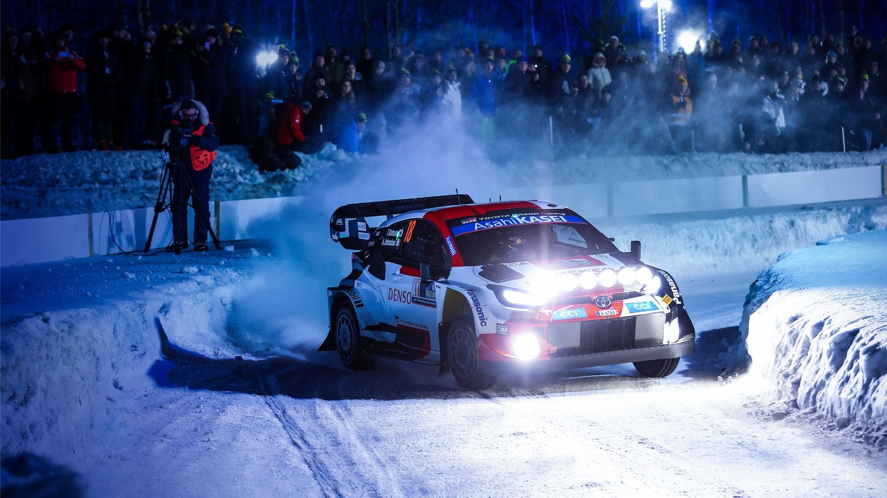

Sports · Motorsport
WRC Rally Sweden 2027
- Dates
- –
- Venue
- Rally Sweden headquarters, Umeå
- Location
- Umeå, Sweden
- Format
- In-person
- Category
- Motorsport
- Industry
- Motorsport
- Organiser
- WRC Promoter / FIA
- Official website
- https://rallysweden.com/en/tickets-for-rally-sweden-2027-go-on-sale-monday-19-october/
About
Dates are local civil dates in Sweden (Europe/Stockholm).
Topics: World Rally Championship, rally.
No organiser attendance figure found on the official pages fetched 24 Nov 2026 for this upcoming edition. Ranked by our estimated size tier 'large' (30,000-100,000 attendees/visits), a judgement from format, venue and scale, not an official number.